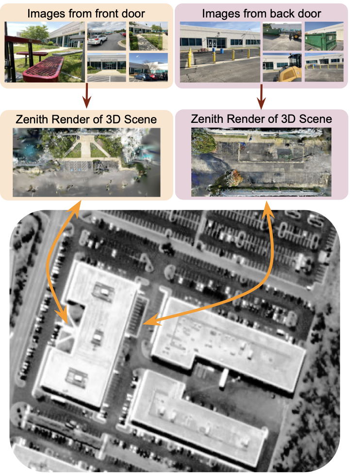
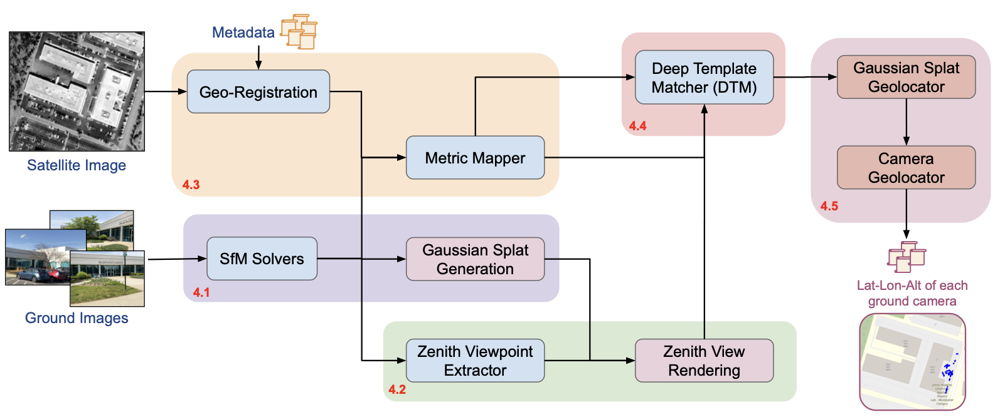
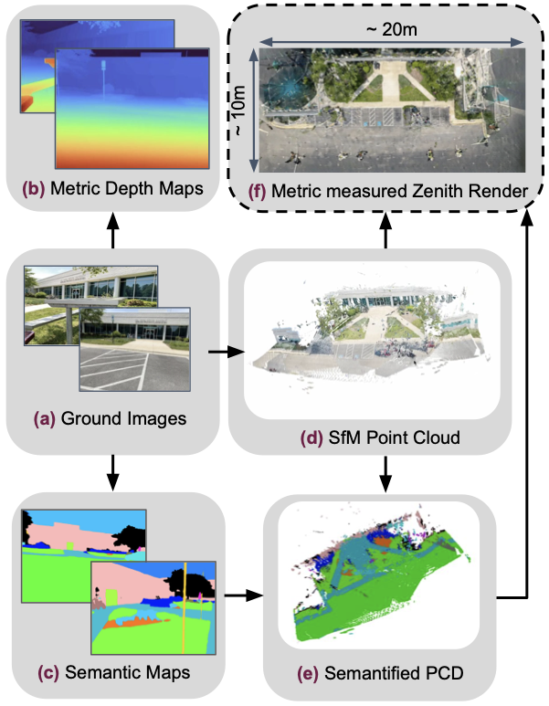
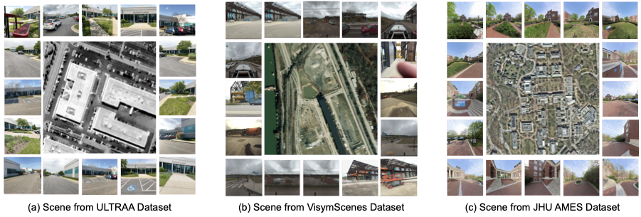
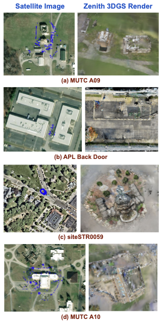

Overview of the pipeline. Directly aligning ground images to satellite views is impractical due to large viewpoint and scale differences. Wrivinder aggregates information from multiple ground images to reconstruct a 3D scene, generates a zenith-view rendering, and aligns it to the satellite image using estimated metric dimensions.
The first dataset linking multi-view ground imagery, SfM/3DGS reconstructions, and geo-registered satellite context across diverse outdoor environments—15 scenes, ~20K ground images paired with NAIP and ESRI aerial tiles.
A geometry-driven, zero-shot framework that reconstructs a consistent 3D scene from multiple ground images and aligns it with overhead satellite imagery. Integrates SfM, 3DGS, semantic grounding, and metric depth cues—no paired supervision required.
A lightweight, test-time self-supervised Deep Template Matcher (DTM) that aligns zenith-view 3DGS renderings to satellite images, enabling robust cross-view correspondence under extreme viewpoint changes without ground–satellite training pairs.
Wrivinder uses geometry as the bridge between drastically different viewpoints. Instead of learning cross-domain correspondences from paired data, it reconstructs a 3D representation of the scene and aligns it directly to the satellite frame through geometric projection and self-supervised matching.

Wrivinder pipeline. Given an unordered set of ground images, the pipeline reconstructs a sparse 3D scene via SfM, densifies it with 3D Gaussian Splatting, generates a zenith render, estimates metric scale, aligns to the satellite image via DTM, and back-projects correspondences to recover camera GPS.

Key intermediate outputs. From left to right: semantic segmentation maps, SfM point cloud, semantified 3D reconstruction, monocular metric depth maps, and the resulting metric-scaled zenith render.
MC-Sat (Multi-view Capture–Satellite) is the first unified benchmark that jointly links multi-view ground imagery, 3D reconstructions, and geo-registered satellite context across diverse outdoor environments. It fills a critical gap in cross-view geo-localization benchmarks by enabling metrically evaluated, multi-view, and truly zero-shot ground-to-satellite alignment.

MC-Sat scenes. Ground imagery paired with corresponding geo-registered satellite tiles across diverse outdoor environments—campuses, urban areas, and training sites.
| Dataset | # Scenes | # Images | Imagery Type |
|---|---|---|---|
| ULTRAA | 3 | 1,028 | Ground |
| VisymScenes | 149 | 258K | Ground |
| ACC-NVS1 | 6 | 148K | Ground + Airborne |
| JHU-Ames | 1 | 1,717 | Ground + Airborne |
| Satellite imagery: USDA NAIP (0.6–1.0 m/px, continental US) + ESRI World Imagery (global). | |||
MC-Sat comprises 15 multi-view scenes (∼20K ground images) spanning two complementary scene types: Image Density scenes (many views of a compact region such as a building entrance or courtyard) and Reconstructed Area scenes (campus-scale environments with broad spatial extent). Together they provide a rigorous testbed for both fine-grained and large-area geo-localization.

Satellite–render pairs. For each scene, the satellite view (with blue dots marking ground-truth camera locations) is shown alongside the corresponding 3DGS zenith rendering produced by Wrivinder. Gaps and blurring in the reconstruction arise from unobserved surfaces (e.g., rooftops) and are the primary source of higher errors in large-area scenes.
Wrivinder is evaluated using three metrics: Mean Geolocation RMSE (haversine distance between predicted and ground-truth camera coordinates), 67th Percentile RMSE (robust measure less sensitive to outliers), and Centroid Error (large-scale drift indicator). Performance is strongest on dense Image Density scenes; larger Reconstructed Area scenes with unobserved surfaces present an open challenge for future work.
If you find our work useful, please consider citing:
@InProceedings{gudavalli2026wrivinder,
title = {wrivinder: Towards Spatial Intelligence for Geo-locating
Ground Images onto Satellite Imagery},
author = {Gudavalli, Chandrakanth and
Mohammed, Tajuddin Manhar and
Yadav, Abhay and
Bhaskar, Ananth Vishnu and
Prajapati, Hardik and
Peng, Cheng and
Chellappa, Rama and
Chandrasekaran, Shivkumar and
Manjunath, B. S.},
booktitle = {Proceedings of the IEEE/CVF Conference on
Computer Vision and Pattern Recognition (CVPR)},
year = {2026},
}
This research is supported by the Intelligence Advanced Research Projects Activity (IARPA) via the Department of Interior / Interior Business Center (DOI/IBC) contract number 140D0423C0076. The U.S. Government is authorized to reproduce and distribute reprints for Governmental purposes notwithstanding any copyright annotation thereon. The views and conclusions contained herein are those of the authors and should not be interpreted as necessarily representing the official policies or endorsements, either expressed or implied, of IARPA, DOI/IBC, or the U.S. Government. We would like to thank Jason Bunk for insights and assistance during the initial phase of this project.